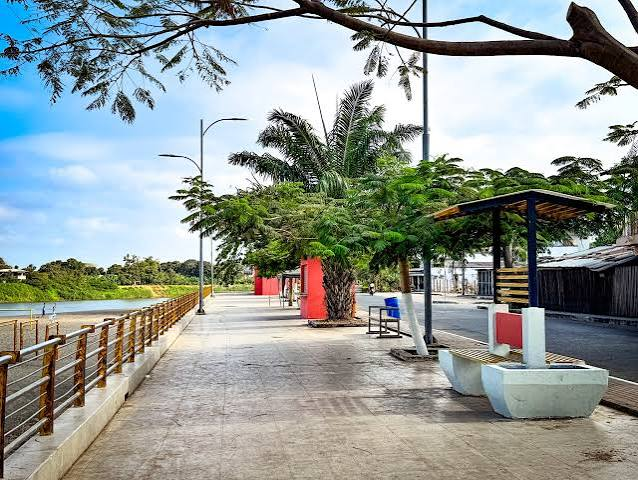
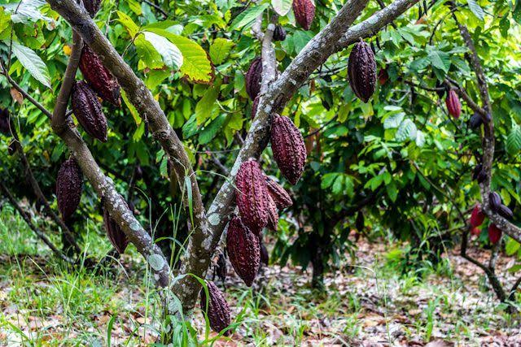
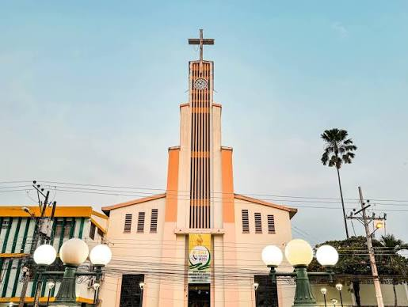
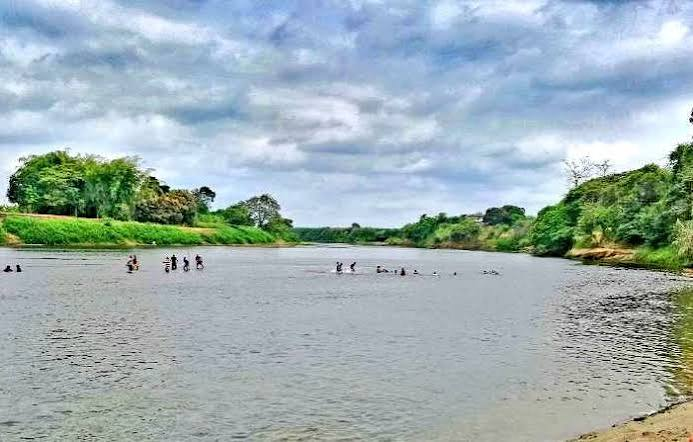

Torre Eiffel de Vinces
Ubicación: Parque Central de Vinces
Réplica construida como tributo a los vínculos culturales e históricos con Francia.
Explora los mejores rincones y la riqueza cultural del París Chiquito.
Ubicación: Parque Central de Vinces
Réplica construida como tributo a los vínculos culturales e históricos con Francia.

Ubicación: Sector Abras de Mantequilla
Sitio Ramsar de importancia internacional rodeado de flora y fauna.

Ubicación: Ribera del Río Vinces
Espacio de recreación familiar con vista panorámica al río.

Ubicación: Zona rural de Vinces
Fincas donde se cultiva el cacao fino de aroma.

Ubicación: Centro de la ciudad
Templo patrimonial con alto valor histórico.

Ubicación: Orillas del Río Vinces
Balnearios naturales muy concurridos en época de verano.